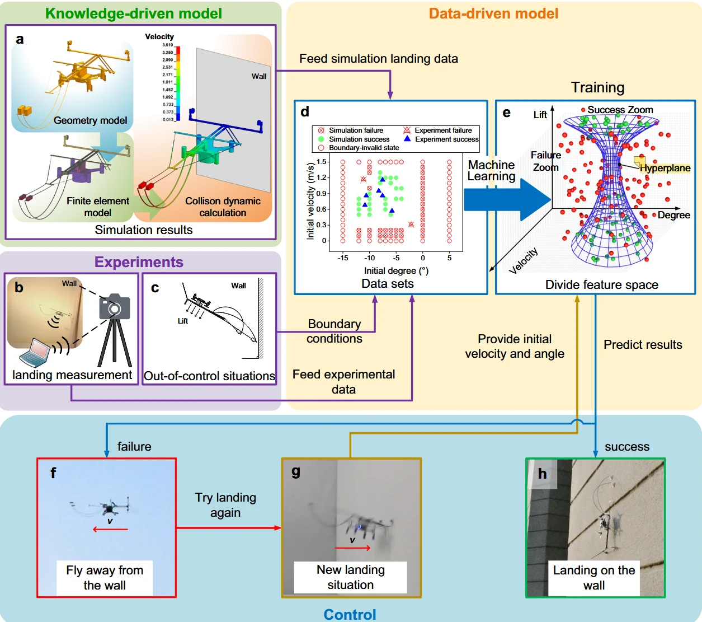

本文目录 · 7 节
一句话精要：用经过实验校验的碰撞模型与数据驱动预测共同研究壁面栖停。主要问题是给定初始姿态、速度与升力时，机器人能否经历翻转和接合并最终停稳。
{kind=link}

放大查看 ↗· 论文事实、项目启发与待验证事项分开记录。
机制 / 结构如何把动作变成附着
知识驱动部分用 LS-DYNA 建模触壁动力学，分析初始俯仰角 θ₀、水平入射速度 v₀ 和升力 FL。原文的 114 个仿真案例用于探索不同着陆行为，后续结合实验数据进行预测。114 指仿真案例数，不是全部真实试验数。
四类结果包括完美着陆、正常着陆、动能不足和动能过高。前两类都属于成功，但稳定过程不同；失败可能来自无法完成翻转，也可能来自反弹。因此“越慢越安全”或“升力越大越好”都不能作为统一策略。
项目启发 / 哪些值得迁移
当前台架首先需要可重复的状态记录和成功定义，再考虑代理模型。训练输入可从触壁前的速度、俯仰角、升力设定、表面和机构版本开始；成功标签必须说明保持多久、是否发生二次接触以及是否仍依赖旋翼。
证据 / 参数与测试条件
| 项目 | 原文或精读记录 | 条件与解释 |
|---|---|---|
| 知识驱动样本 | 114 个仿真工况 | 碰撞动力学分析；不能写成 114 次独立实飞 |
| 主要状态变量 | θ₀、v₀、FL | 角度零点、正负号与力的定义必须沿用测试坐标 |
| 成功类型 | 完美着陆 / 正常着陆 | 二者的轨迹与晃动程度不同 |
| 失败类型 | 动能不足 / 动能过高 | 分别关注翻转不足与反弹脱离 |
实验 / 转化为可检查的问题
以下为结合阅读提出的实验建议，尚不代表本项目已完成：
- 按照不同表面或机构版本划分验证集，避免同一条轨迹的相邻帧同时进入训练与验证。
- 保留失败类别和全过程轨迹，检查模型在哪些速度、姿态区域误判；超出训练范围的结果单独标记。
边界 / 这些结论不能直接外推
后两项是面向本项目的数据记录建议，并非声称原文采用了这些数据划分。特定平台训练的模型不能直接保证换足端后的成功率，也不替代物理接触模型。
关联阅读 / 沿问题继续读
- Pope2017 — 理解飞行到栖停的真实动作和载荷路径。
- Kim2023 — 用缓冲、反弹与挂持解释成功区域背后的物理原因。
- Asbeck2006 — 表面挂点条件变化会影响结果，不能只输入机身运动状态。
论文关联地图 · 当前项目记录：光滑面方案仍在筛选，历史干黏附构想不等于已定型方案。
来源 / 阅读记录与原文
整理依据：myvault：Shen et al 2025 - 摘要、停靠；核对 Shen2025 原文知识驱动模型与数据驱动模型章节。